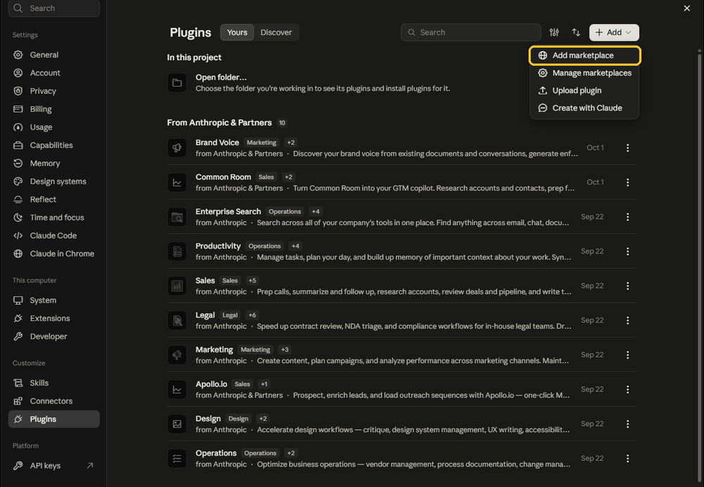
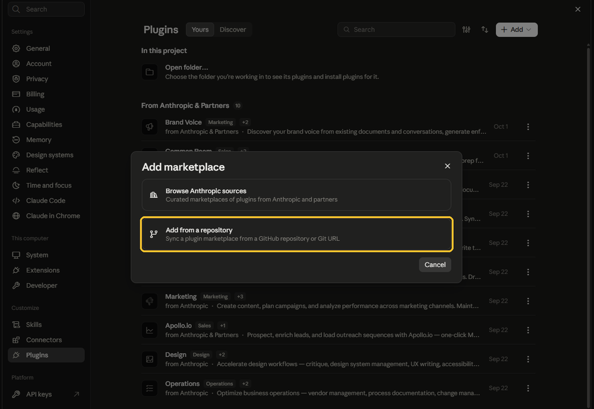
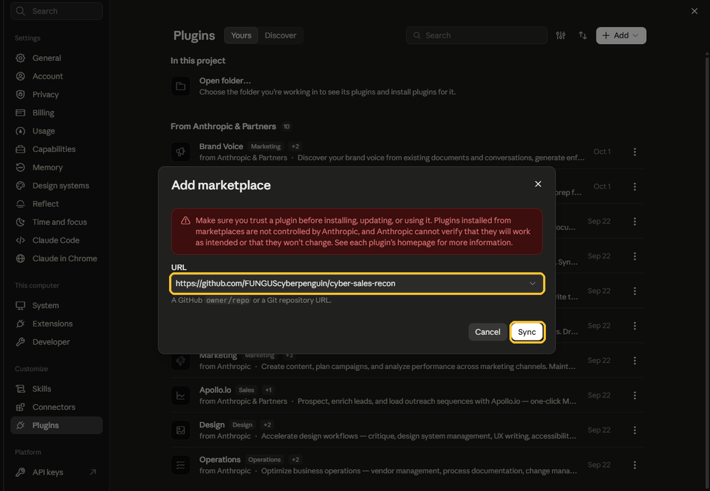
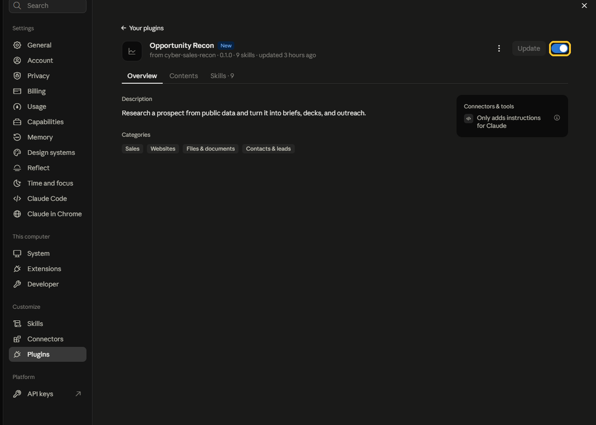
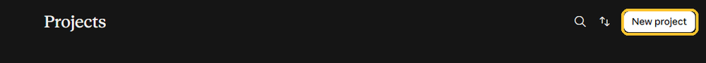
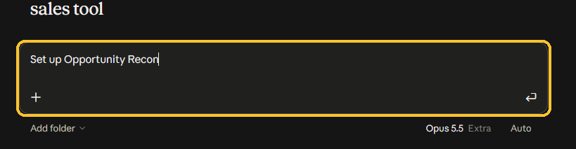
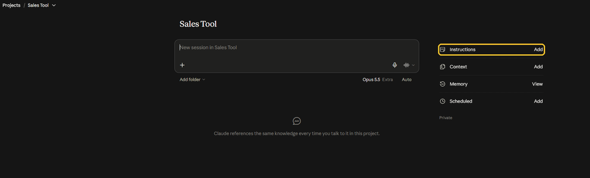
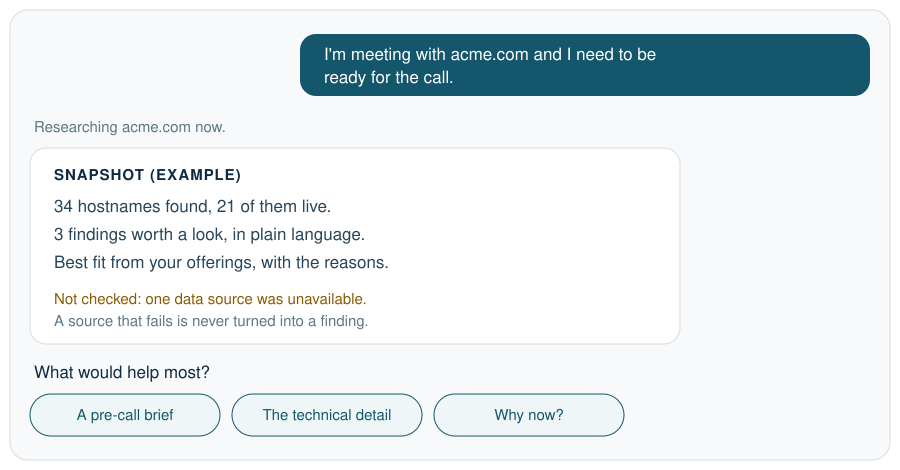
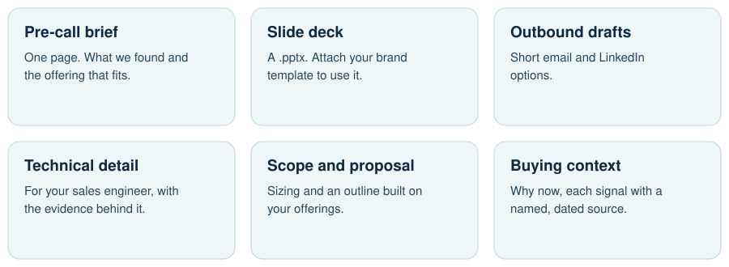

Install
About five minutes, and you only do it once. Every picture has that step's click circled in yellow.
Part 1: Add the plugin
3Click Add, then Add marketplace

4Choose Add from a repository

5Paste this address and click Sync
https://github.com/FUNGUScyberpenguin/cyber-sales-reconClaude shows a red warning that marketplace plugins aren't checked by Anthropic. You can read everything this one does at that address.

6Turn it on
Scroll to From marketplaces you added, open Opportunity Recon, and make sure the switch is on.

Part 2: Make a Project
A Project is where Claude keeps your firm profile, so you only set up once.
8Click New project

Part 3: Set it up
10Start setup
Click the box that says "New session" and type:
Set up Opportunity ReconClaude asks for your firm's website and a couple of quick questions, then drafts your profile. Fix anything that's off, then say yes.

11Save the backup
When setup finishes, Claude prints a block of text. Click Add next to Instructions on the right and paste it there. If Claude ever forgets your profile, this brings it back.

12Ask for your first call
Type who you're meeting, for example:
I'm meeting with acme.com and I need to be ready for the call.Then just ask
Talk the way you would to a coworker. Say who you're meeting. You don't need commands. If you only know the company's name, Claude asks for its website.

What you can ask for

Every claim traces back to something the research found, or to a named, dated source. If your profile is missing a detail, Claude leaves that claim out.
Your profile is kept. Research runs aren't: each one lives in the chat where you made it. In a new chat, ask again.
If Claude says research is blocked
Your network or workspace is stopping Claude from reaching the public sources. Ask Claude: "Write a note for my IT team about what to allow." It knows what was blocked and, where it can tell, where it's running, so the note names the right hosts and the right setting. Send that note to IT.